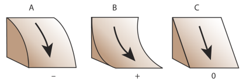
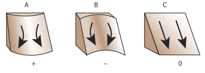
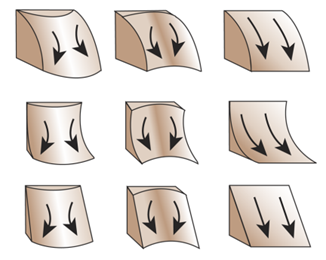

Terrain Attributes¶
RichDEM can calculate a number of terrain attributes.
Slope¶
Horn, B.K.P., 1981. Hill shading and the reflectance map. Proceedings of the IEEE 69, 14–47. doi:10.1109/PROC.1981.11918
Horn (1981) calculates the slope of a focal cell by using a central difference estimation of a surface fitted to the focal cell and its neighbours. The slope chosen is the maximum of this surface and can be returned in several formats.
import richdem as rd
import numpy as np
beau = rd.rdarray(np.load('imgs/beauford.npz')['beauford'], no_data=-9999)
slope = rd.TerrainAttribute(beau, attrib='slope_riserun')
rd.rdShow(slope, axes=False, cmap='jet', figsize=(8,5.5))
(Source code, png, hires.png, pdf)
{kind=link}
{kind=link}
{kind=link}
| Language | Command |
|---|---|
| Python | richdem.TerrainAttribute |
| C++ | richdem::TA_slope_riserun() |
| C++ | richdem::TA_slope_percentage() |
| C++ | richdem::TA_slope_degrees() |
| C++ | richdem::TA_slope_radians() |
Aspect¶
Horn, B.K.P., 1981. Hill shading and the reflectance map. Proceedings of the IEEE 69, 14–47. doi:10.1109/PROC.1981.11918
Horn (1981) calculates aspect as the direction of the maximum slope of the focal cell. The value returned is in Degrees.
aspect = rd.TerrainAttribute(beau, attrib='aspect')
rd.rdShow(aspect, axes=False, cmap='jet', figsize=(8,5.5))
(Source code, png, hires.png, pdf)
{kind=link}
{kind=link}
{kind=link}
| Language | Command |
|---|---|
| Python | richdem.TerrainAttribute |
| C++ | richdem::TA_aspect() |
Profile Curvature¶
Zevenbergen, L.W., Thorne, C.R., 1987. Quantitative analysis of land surface topography. Earth surface processes and landforms 12, 47–56.
Profile curvature is calculated by fitting a surface to the focal cell and its neighbours. The profile curvature runs parallel to the maximum slope of this surface and affects the acceleration and deceleration of flow down the slope.
Negative profile curvatures (A) indicate upwardly convex slopes, positive profile curvatures (B) indicate upwardly concave surfaces, and a profile curvature of zero indicates a linear slope (C).
profile_curvature = rd.TerrainAttribute(beau, attrib='profile_curvature')
rd.rdShow(profile_curvature, axes=False, cmap='jet', figsize=(8,5.5))
(Source code, png, hires.png, pdf)
{kind=link}
{kind=link}
{kind=link}
| Language | Command |
|---|---|
| Python | richdem.TerrainAttribute |
| C++ | richdem::TA_profile_curvature() |
Planform Curvature¶
Zevenbergen, L.W., Thorne, C.R., 1987. Quantitative analysis of land surface topography. Earth surface processes and landforms 12, 47–56.
Planform curvature is calculated by fitting a surface to the focal cell and its neighbours. The planform curvature runs perpendicular to the maximum slope of this surface and affects the convergence and divergence of flow down the slope.
Negative planform curvatures (A) indicate laterally convex slopes, positive planform curvatures (B) indicate laterally concave surfaces, and a planform curvature of zero indicates a linear slope (C).
planform_curvature = rd.TerrainAttribute(beau, attrib='planform_curvature')
rd.rdShow(planform_curvature, axes=False, cmap='jet', figsize=(8,5.5))
(Source code, png, hires.png, pdf)
{kind=link}
{kind=link}
{kind=link}
| Language | Command |
|---|---|
| Python | richdem.TerrainAttribute |
| C++ | richdem::TA_planform_curvature() |
Curvature¶
Zevenbergen, L.W., Thorne, C.R., 1987. Quantitative analysis of land surface topography. Earth surface processes and landforms 12, 47–56.
Curvature is calculated by fitting a surface to the focal cell and its neighbours. It combines profile and planform curvature.
curvature = rd.TerrainAttribute(beau, attrib='curvature')
rd.rdShow(curvature, axes=False, cmap='jet', figsize=(8,5.5))
(Source code, png, hires.png, pdf)
{kind=link}
{kind=link}
{kind=link}
| Language | Command |
|---|---|
| Python | richdem.TerrainAttribute |
| C++ | richdem::TA_curvature() |